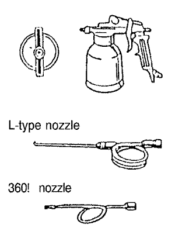

Captiva | ||||||||
| ||||||||
| Funcionamiento | Herramientas/materiales | Procedimiento | Observaciones |
| 1. Prepare la zona de reparación. | Lijadora de doble acción, papel de lija nº 80. | Lije la zona con una lijadora de doble acción y papel de lija nº 80. Límpiela con disolvente de grasa y cera. | . |
| 2. Aplique masilla. Nota: La masilla puede aplicarse después de la capa de imprimación como se describe en el paso 4. |
Masilla epoxídica. |
Aplíquela en varias capas finas si fuera necesario. Trate de que no queden poros abiertos en la masilla. | . |
| 3. Lije y limpie el área enmasillada. | Lijadora de doble acción, lijadora orbital, lima rápida, papel del lija nº 80, nº 120, nº 240, disolvente de grasa y cera, trapos de taller. | Lije la zona con una lijadora de doble acción y papel de lija nº 80, a continuación lije con papel de lija nº 120. Bisele con papel de lija nº 240. Límpiela con disolvente de grasa y cera. | . |
| 4. Aplique una capa de imprimación. Nota: Aplíquela sobre la chapa de metal desnuda y el área enmasillada. |
Capa de imprimación y endurecedor epoxídicos, diluyente epoxídico. | Aplique 2-4 capas, dejando tiempo de curado suficiente entre la aplicación de las capas. Séquela con máquina de secar a 60-70∞C (140-158∞F) durante por lo menos 30 minutos. | Pulverice hasta formar una capa de 30-35 micrones de espesor. |
| 5. Lije y limpie toda el área. | Lijadora de doble acción, papel de lija nº 400, disolvente de grasa y cera, trapo de taller. | Lije toda la zona que se vaya a repintar con una lijadora de doble acción y papel de lija nº 400. Sople con aire comprimido. Límpiela con disolvente de grasa y cera. | . |
| 6. Aplique a toda el área que vaya a pintar una capa de imprimación/pintura para después de la imprimación. |
Capa de imprimación/pintura para después de la imprimación de resina de poliéster/uretano. | Aplique 2-4 capas, dejando tiempo de curado suficiente entre la aplicación de las capas. Séquela con máquina de secar a 60-70∞C (140-158∞F) durante por lo menos 30 minutos. | Pulverice hasta formar una capa de 30-35 micrones de espesor. |
| 7. Lije y limpie toda el área que vaya a repintar. | Lima rápida, lijadora de doble acción, papel de lija nº 240, nº 320, nº 400, nº 600, disolvente de grasa y cera, trapo de taller. | Lije a mano el área a reparar, con papel de lija nº 240 hasta que esté pareja. Lije toda el área que se vaya a repintar, con papel de lija nº 320- 600. Límpiela con disolvente de grasa y cera. | . |
| 8. Aplique la capa de pintura a toda el área que se vaya a repintar. |
Pintura para capa superior, de resina de acrílico uretano, endurecedor, y diluyente. | Aplique 2-4 capas, dejando tiempo de curado suficiente entre la aplicación de las capas. Séquela con máquina de secar a 60-70∞C (140-158∞F) durante por lo menos 30 minutos. | Pulverice hasta formar una capa de 40-50 micrones de espesor. |
| RUSTOP DEOX #100 WAXOYL | U.S.A. MARKET AUTO ARMOR 1031 (producido por E.C.P) | Para aplicar en uniones soldadas, en el interior de los paneles de la carrocería. |
| NOX-RUST 409-20S SOLTION 1000S | AUTO ARMOR OUTSIDE COATING (producido por E.C.P) | Para aplicar en bajos de carrocería y pasos de rueda. |
| Para RUSTOP | DEOX#100 | Para WAXOYL | Para NOXRUST 409-20S/ SOLTION 1000S |
 |   |  |  |
Medios de protección: Use guantes, mascarilla y gafas de protección apropiadas. | |||


| © Copyright Chevrolet Europe. Reservados todos los derechos |